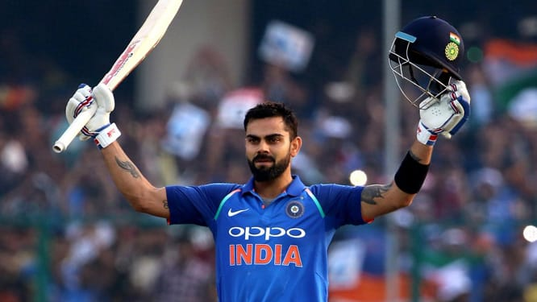

Virat Kohli
5 November 1988
One of the richest cricketer
Virat Kohli is an Indian cricketer and the captain of India national
cricket team in Tests.
He plays for Delhi in domestic cricket and Royal Challengers Bangalore in the Indian Premier
League as a right-handed batsman. Kohli is considered as
one of the best batsmen of his era. Kohli made his Test debut in 2011.

most liked picture of Virat Kohli